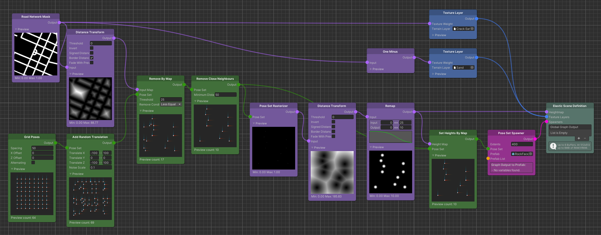
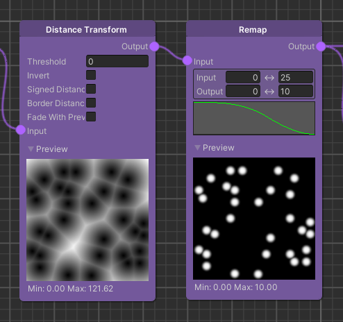
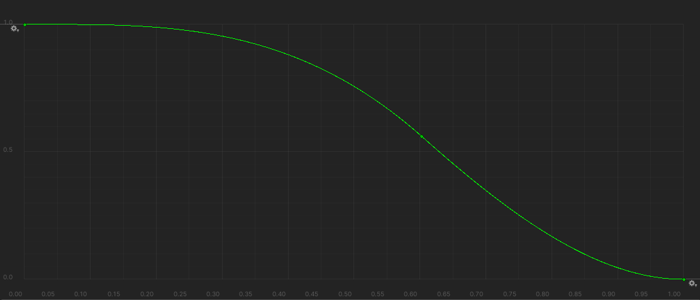

Pose Based Maps
An advanced way to design your procedural terrain is to use Poses that are rasterized into Maps. The idea is to use the position of a Pose as a reference point on a Map to create a heightmap.
Rasterizing Pose positions into Maps can be achieved by using the Pose Set Rasterizer node.
Imagine the case where you want to generate special shapes at distinct locations of an ever-changing terrain. While the basic workflow of using a Distance Transform from a Road Network Mask, is sufficient to derive an overall look for the terrain, we are unable to place shapes at certain location.
However, by replacing the Road Network Mask as Distance Transform input with rasterized Pose positions, we enable ourselves to place special shapes with only a local influence on the terrain, relative to the Pose position. These Pose positions, and thus the derived shapes as well, can then be manipulated further using all of the available Pose Set Modifiers.
The following guide will show you how to use a modified Pose Set, rasterized to a Map, to generate local shapes on the terrain which reflect the presence of spawned objects at the same location.

Pose Set Modification
Starting with a Grid Poses node we generate an initial set of Poses. We can further modify this Pose Set, to generate more distinct positions. While all of the Pose Set Modifier nodes are applicable here, for this example we simply add a random translation to the Poses to break up the rigid grid structure.
Since we do not want the player to collide with our terrain shapes and spawned object, we use a Remove By Map node to
only process Poses further that are not located too close to the street.
Choosing the proper Threshold value here is important. It should reflect at least the radius of the shape that you
plan to generate per Pose, to prevent the shapes from intersecting with the road network.
The subsequent Remove Close Neighbours node will make sure that the shapes we generate will not overlap with neighbouring shapes. Here the Minimum Distance should at least be equal to twice the radius (the diameter) of the final shape but in most cases a bit larger to give them enough spacing and to prevent blending inaccuracies.
Pose Rasterization & Shape Generation
Having generated and modified a Pose Set that reflects proper positions, we can now move on to the actual shape generation.
Using the Pose Set Rasterizer node we can compute a Map that has a white pixel where each of the input Poses would be located. Taking the Distance Transform of such a Map will result in a new Map that displays pixel values correlating to the distances away from each of the original Poses' positions.
This process creates a very distinct pattern, usually referred to as Voronoi Diagram.
While the center of each cell if the pattern is the location of a original Pose position, the borders of the cells (the
brightest pixels) are the largest distance between each cell's center.
Knowing this, we can use a Remap node that will project the distance values into a range, which will ultimately describe the shapes we want to generate.
Distance Remapping

The input range of the Remap node comes from the Distance Transform of the rasterized Pose Set. This means whatever we set here will be the distance across which our shape will generated.
The output range on the other hand will determine the height gradient of the shape.
So setting the input range to 0..25 and the output range to 0..10, effectively translates to a shape that evolves over 25 meters away from its origin with a minimum height of 0 and a maximum height of 10 meters.
Important
Whatever value you set for the output range's maximum value, will be the radius of the resulting shape. This is the value that you should base the earlier mentioned Remove By Map node's Threshold and the Remove Close Neighbours node's Minimum Distance on.
To determine the very look of the shape, we have to use the curve parameter of the Remap node.

Imagine the curve being a half-section of the vertical cut of your shape. Where in this example the origin of the curve correlates to the origin of the shape. Changing the keys of the curve will have a direct impact on the final shape that is generated on the terrain.
The output of the Remap node can now be used as the Heightmap graph output for this example.
Note
More complex setup require some sort of blending between the generated local Pose shapes and the overall global terrain look. A Lerp node using an alpha mask to blend between the overall terrain and the Pose shapes suites this situation best in most cases. The alpha mask can be derive from the Map holding the Pose shapes using a Remap node.
Spawner Setup
Since we originally planned to reflect the presence of spawned object at their location on the terrain, we still have to
setup a Spawner. Doing this will be rather simple, since we have generated the require Pose Set already.
The only thing we have to do is setting the height of the Poses (i.e. the y-value of the Poses' positions).
This way we make sure that our objects will always spawn on top of the generated shape.